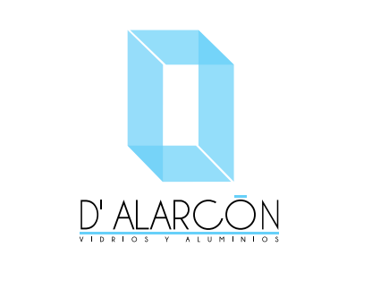
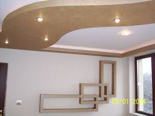

Quienes somos
Vidrios y Aluminios D'Alarcón es una empresa poblana dedicada a la innovación en procesos de la industria del vidrio. Teniendo alcance en todo Izucar de Matamoros y sus alrededores, atendemos las necesidades del mercado mediante el proceso, transformación, distribución e instalación del vidrio plano y todos sus complementos en aluminio y herrajes.
Te ofrecemos un avanzado sistema integral de construcción para cada uno de tus proyectos con tablaroca, representan la mejor opción en el mercado para construcciones nuevas o remodelaciones por su calidad, versatilidad, tecnología y seguridad.

